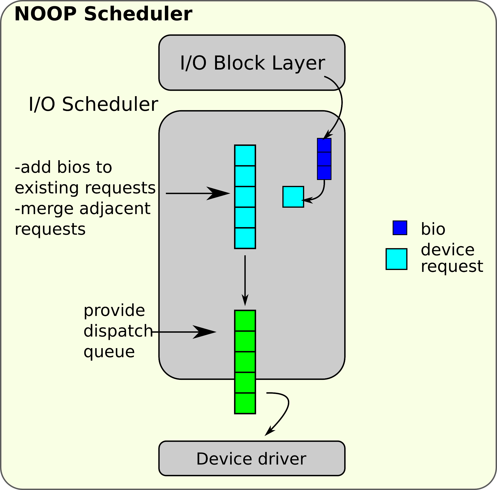
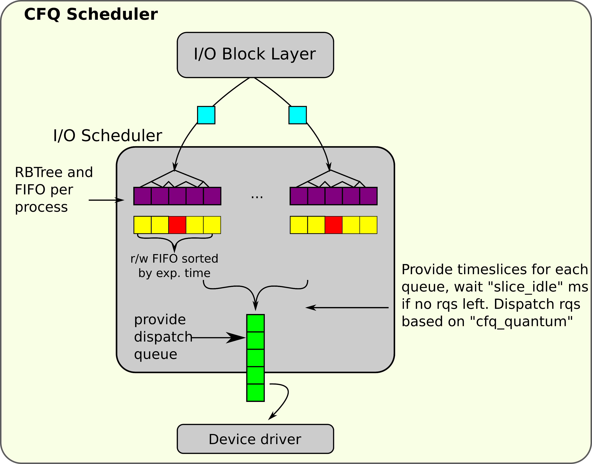
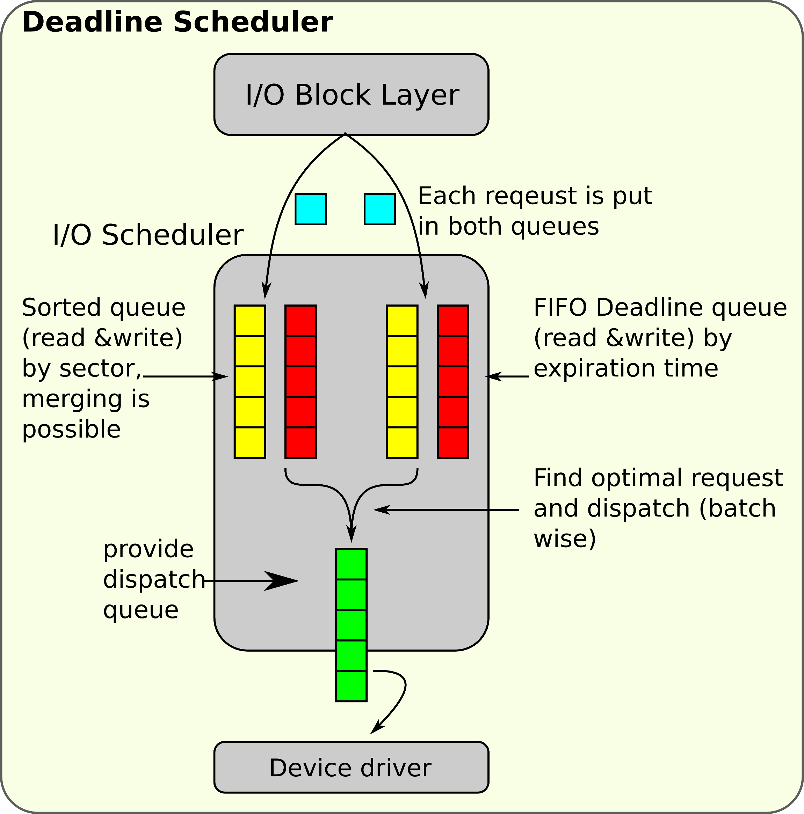

重新学习Linux系统编程-4
重新学习Linux系统 4
高级文件IO
分散/集聚 IO
它指的是单次的系统调用中对多个缓冲区输入输出的办法，可以把多个缓冲区的数据写入单个数据流中
与线性的相比，分散IO具有这些有时
- 编码格式更加自然：对于那些数据本身分段的，向量IO提供了更加直观的数据处理
- 效率更高：向量IO可以看作是按照一定方式集成的多个线性IO
- 性能更好：处理减少发起的系统调用的次数以外，还可以由于内部的优化二有更好的性能
- 支持原子操作
readv && writev
也就是readVector和writeVector的意思，API接口如下所示：
#include <sys/uio.h>
ssize_t readv(int fd, const struct iovec *iov, int iovcnt);
ssize_t writev(int fd, const struct iovec *iov, int iovcnt); 每一个iovec都是这样的一个结构体：
#include <sys/uio.h>
struct iovec{
void* iov_base;
size_t iov_len;
}; 我们count这个字段就是说明要处理多少个数据段。
这两个函数就是返回的处理的字节数目。
epoll
epoll是Linux内核的可扩展I/O事件通知机制，让需要大量操作文件描述符的程序得以发挥更优异的性能（举例来说：旧有的系统函数所花费的时间复杂度为O(n)，epoll的时间复杂度O(log n)）。epoll 实现的功能与 poll 类似，都是监听多个文件描述符上的事件。
epoll与FreeBSD的kqueue类似，底层都是由可配置的操作系统内核对象建构而成，并以文件描述符(file descriptor)的形式呈现于用户空间。epoll 通过使用红黑树(RB-tree)搜索被监控的文件描述符(file descriptor)。
在 epoll 实例上注册事件时，epoll 会将该事件添加到 epoll 实例的红黑树上并注册一个回调函数，当事件发生时会将事件添加到就绪链表中。
创建epoll
int epoll_create(int size); 在内核中创建epoll实例并返回一个epoll文件描述符。 在最初的实现中，调用者通过 size 参数告知内核需要监听的文件描述符数量。如果监听的文件描述符数量超过 size, 则内核会自动扩容。而现在 size 已经没有这种语义了，但是调用者调用时 size 依然必须大于 0，以保证后向兼容性。
操作epoll
int epoll_ctl(int epfd, int op, int fd, struct epoll_event *event); 向 epfd 对应的内核epoll 实例添加、修改或删除对 fd 上事件 event 的监听。op 可以为 EPOLL_CTL_ADD, EPOLL_CTL_MOD, EPOLL_CTL_DEL 分别对应的是添加新的事件，修改文件描述符上监听的事件类型，从实例上删除一个事件。如果 event 的 events 属性设置了 EPOLLET flag，那么监听该事件的方式是边缘触发。
等待epoll事件
int epoll_wait(int epfd, struct epoll_event *events, int maxevents, int timeout); 当 timeout 为 0 时，epoll_wait 永远会立即返回。而 timeout 为 -1 时，epoll_wait 会一直阻塞直到任一已注册的事件变为就绪。当 timeout 为一正整数时，epoll 会阻塞直到计时 timeout 毫秒终了或已注册的事件变为就绪。因为内核调度延迟，阻塞的时间可能会略微超过 timeout 毫秒。
触发模式
epoll提供边沿触发及状态触发模式。在边沿触发模式中，epoll_wait仅会在新的事件首次被加入epoll队列时返回；于level-triggered模式下，epoll_wait在事件状态未变更前将不断被触发。状态触发模式是默认的模式。
状态触发模式与边沿触发模式有读和写两种情况，我们先来考虑读的情况。假设我们注册了一个读事件到epoll实例上，epoll实例会通过epoll_wait返回值的形式通知我们哪些读事件已经就绪。简单地来说，在状态触发模式下，如果读事件未被处理，该事件对应的内核读缓冲器非空，则每次调用 epoll_wait 时返回的事件列表都会包含该事件。直到该事件对应的内核读缓冲器为空为止。而在边沿触发模式下，读事件就绪后只会通知一次，不会反复通知。
然后我们再考虑写的情况。水平触发模式下，只要文件描述符对应的内核写缓冲器未满，就会一直通知可写事件。而在边沿触发模式下，内核写缓冲器由满变为未满后，只会通知一次可写事件。
举例来说，倘若有一个已经于epoll注册之流水线接获资料，epoll_wait将返回，并发出资料读取的信号。现假设缓冲器的资料仅有部分被读取并处理，在level-triggered模式下，任何对epoll_wait之调用都将即刻返回，直到缓冲器中的资料全部被读取；然而，在edge-triggered的情境下，epoll_wait仅会于再次接收到新资料(亦即，新资料被写入流水线)时返回。
边沿触发模式[编辑]
边沿触发模式使得程序有可能在用户态缓存 IO 状态。nginx 使用的是边沿触发模式。
文件描述符有两种情况是推荐使用边沿触发模式的。
- read 或者 write 系统调用返回了 EAGAIN。
- 非阻塞的文件描述符。
可能的缺陷：
- 如果 IO 空间很大，你要花很多时间才能把它一次读完，这可能会导致饥饿。举个例子，假设你在监听一个文件描述符列表，而某个文件描述符上有大量的输入（不间断的输入流），那么你在读完它的过程中就没空处理其他就绪的文件描述符。（因为边沿触发模式只会通知一次可读事件，所以你往往会想一次把它读完。）一种解决方案是，程序维护一个就绪队列，当
epoll实例通知某文件描述符就绪时将它在就绪队列数据结构中标记为就绪，这样程序就会记得哪些文件描述符等待处理。Round-Robin 循环处理就绪队列中就绪的文件描述符即可。 - 如果你缓存了所有事件，那么一种可能的情况是 A 事件的发生让程序关闭了另一个文件描述符 B。但是内核的
epoll实例并不知道这件事，需要你从epoll删除掉。
存储映射
我们想要说的就是mmap函数系列。
#include <sys/mman.h>
void *mmap(void addr[.length], size_t length, int prot, int flags,int fd, off_t offset); mmap的参数说明如下：
addr告诉我内核映射文件的最佳地址，一般而言传递的是0
prot描述了我们的访问权限：PROT_NONE就是无法访问（不用）。其余的参数看下面：
PROT_EXEC Pages may be executed. PROT_READ Pages may be read. PROT_WRITE Pages may be written. PROT_NONE Pages may not be accessed. 下面说说flag参数：
MAP_SHARED Share this mapping. Updates to the mapping are visible to other processes mapping the same region, and (in the case of file-backed mappings) are carried through to the underlying file. (To precisely control when updates are carried through to the underlying file requires the use of msync(2).) MAP_SHARED_VALIDATE (since Linux 4.15) This flag provides the same behavior as MAP_SHARED except that MAP_SHARED mappings ignore unknown flags in flags. By contrast, when creating a mapping using MAP_SHARED_VALIDATE, the kernel verifies all passed flags are known and fails the mapping with the error EOPNOTSUPP for unknown flags. This mapping type is also required to be able to use some mapping flags (e.g., MAP_SYNC). MAP_PRIVATE Create a private copy-on-write mapping. Updates to the mapping are not visible to other processes mapping the same file, and are not carried through to the underlying file. It is unspecified whether changes made to the file after the mmap() call are visible in the mapped region.
这个函数实际上就是把文件的读写映射到了内存里——访问内存读写速度显然比访问文件要快。
但是我们不能滥用mmap，正确使用才会让他的效率最大化，这里我们先介绍页的概念：
页是MMU的粒度单元，mmap的基本块就是页。所以，我们映射的大小就是页的整数倍。查看当前页的方法是调用sysconf函数而不是直接使用暴露的宏PAGE_SIZE
munmap
int munmap(void addr[.length], size_t length); 取消我们的映射。
优缺点分析
优点
我们可以直接减少数据的拷贝操作（比起来向用户缓冲区读写然后拷贝到磁盘）
- 减少潜在的页错误，我们直接操作内存
- 搜索对象直接用指针偏移而不用lseek
- 当多个进程把同一个对象映射到内存时，数据会在所有进程间共享，只读和写共享的映射在群体中都是共享的。私有可写的映射对尚未进行写时拷贝的也是共享的
缺点
由于映射区域的大小总是页大小的整倍数所以文件大小与叶大小倍数之间存在空间浪费，所以这种使用方式不适合用于小文件
其次存储映射区域必须在进程地址空间内，对于32位的地址空间大量的，大小不同的映射会导致生成大量的碎片，使得难以找到连续的大片空内存
创建和维护映射以及相关的内核数据结构是有一定开销的，不过如上所示，由于这个调用消除了读写时的不必要拷贝，这样的开销几乎可以忽略。对于大文件和频繁访问的文件更是如此
mremap
#include <sys/mman.h>
void *mremap(void old_address[.old_size], size_t old_size,size_t new_size, int flags, ... /* void *new_address */); 也就是动态调整映射区域的大小
posix_fadvise()系统调用
#include <fcntl.h>
int posix_fadvise(int fd, off_t offset, off_t len, int advice);对posix_fadvise()的调用为内核提供了文件描述符fd上的对于[offset, offset+len)这一段的建议。如果len为0，则建议将应用于范围[offset，length of file]。
可供选择的advice参数有：
- POSIX_FADV_NORMAL
应用程序没有关于此文件范围的特定通知。它应该被视为正常。
内核像往常一样运行，执行适量的readahead操作。 - POSIX_FADV_RANDOM
应用程序打算访问特定的数据以随机的方式。
内核禁用readahead，只读取每个物理读取操作的最小数据量。 - POSIX_FADV_SEQUENTIAL
应用程序打算顺序地访问指定范围内的数据，从低地址到高地址。
内核执行积极的readahead，使readahead读取窗口的大小加倍。 - POSIX_FADV_WILLNEED
应用程序打算在不久的将来访问指定范围内的数据。
内核启动readahead，开始读取给定页面的内存。 - POSIX_FADV_NOREUSE
应用程序打算在不久的将来访问指定范围内的数据，但只访问 就一次。
-POSIX_FADV_DONTNEED
应用程序不打算在不久的将来访问指定范围内的页面。
当前，该行为与POSIX_FADV_WILLNEED相同；未来的内核可能会执行额外的优化来利用“一次性使用”行为。
内核从页面缓存中删除给定范围内的任何缓存数据。
//example
int ret;
ret = posix_fadvise(fd, 0,0, POSIX_FADV_RANDOM);
if(ret == -1){
perror("posix_fadvise");
}成功后，返回0。如果失败，则返回−1，并设置errno。
readahead()系统调用
posix_fadvise()系统调用对于2.6Linux内核来说是新的。readahead()系统调用以前就有了，与POSIX_FADV_WILLNEED提示有相同的行为。
与posix_fadvise()不同的是, readahead() 是linux专属接口。
#define _GNU_SOURCE
#include <fcntl.h>
ssize_t readahead(int fd, off64_t offset, size_t count);对readahead()的调用将从文件描述符fd中的区域[offset，偏offset+count)填充到页面缓存中。
成功后，readahead()返回0。如果失败，则返回−1，并设置errno。
一些常见的应用程序工作负载可以很容易地受益于对内核的一些善意的建议。这样的建议可以大大减轻I/O的负担。在读取文件块之前，进程可以提供POSIX_FADV_WILLNEED提示，指示内核将文件读入页缓存。I/O将在后台异步发生。 当应用程序最终访问文件时，操作可以没有阻塞的完成。
相反，在读取或写入大量数据(例如，将视频连续流写到磁盘时)，进程可以提供POSIX_FADV_DONTNEED提示，指示内核排除页缓存中给定的文件块。一个大的流操作可以持续地填充页面缓存.如果应用程序不再打算访问数据，这意味着页面缓存将充满多余的数据。 以牺牲潜在更有用的数据为代价。因此，流视频应用程序定期请求将流数据从缓存中清除是有意义的。
打算读取整个文件的进程可以提供POSIX_FADV_SEQUENTIAL提示，指示内核执行积极的readahead。相反的，一个进程知道自己会随机处理一个文件，寻求来回，可以提供POSIX_FADV_RANDOM提示，指示内核readahead将是毫无价值的开销。
常见的IO调度器
为什么会有IO调度器呢？原因是处理速度和磁盘访问速度的不匹配。它实际上就是将多次访问合并，按照区块号码排列，这样我们的磁头就不会乱序的访问而是顺序的访问得到数据。
Noop调度器
：Noop（No Operation）调度器是最简单的IO调度器，它实际上不做任何调度，只是按照请求的顺序将IO请求传递给硬件。这种调度器适用于具有自身硬件级IO调度机制的设备，如SSD。

CFQ调度器
（Completely Fair Queuing）：CFQ调度器的目标是为所有进程提供公平的IO服务。它将每个进程的IO请求放入单独的队列中，并按时间片分配IO服务。这样可以保证每个进程都能得到一定的IO带宽，提高系统的整体响应

Deadline调度器
：Deadline调度器旨在保证IO请求的延迟。它为每个IO请求设置一个截止时间，优先处理接近截止时间的请求。此外，它还区分同步和异步请求，确保同步请求（通常是交互式操作）能得到及时处理。

Anticipatory调度器：
Anticipatory调度器是在CFQ调度器基础上的一种优化。它的基本思想是，在处理完一个IO请求后，故意延迟一段时间再处理下一个请求。这个延迟的时间预期用户在读取数据后可能会有新的读取请求，这样可以减少磁头的寻道次数，提高磁盘的效率。然而，这种调度器对于随机写入操作或者SSD等无寻道延迟的设备来说效果不佳。
MQ-Deadline和MQ-None：
这两种调度器是为多队列硬盘驱动器设计的。MQ-Deadline与普通的Deadline调度器类似，但每个硬件队列都有自己的调度策略。MQ-None则类似于Noop调度器，不对IO请求做任何调度，直接将请求发送到硬件队列。
选择哪种IO调度器取决于具体的硬件特性和工作负载需求。例如，对于SSD等高速存储设备，通常推荐使用Noop或Deadline调度器，因为这些设备的内部已经具有高效的硬件级调度机制。而对于传统的机械硬盘，CFQ或Deadline调度器可能更适合，因为他们能够更好地管理磁头的寻道和旋转延迟。
程序，进程和线程的基本概念
程序指的是编译过后的，，可以执行的二进制程序，一般而言，他们被保存在磁盘介质上
进程则是指代的正在运行程序，他们被加载到进程上被CPU选中执行，线程就是进程内的活动单元。
pid
pid是标识进程的一个标识符，是一个整数：第一个进程也就是线程他自己是0号进程，初始化的init进程是1号进程，其他派生的进程号就有其自己对应的进程号。
进程分配上一般是达到上限后才会重用之前的pid号，否则只会递增不会递减。其pid的类型是pid_t。我们这样获取pid号：
#include <sys/types.h>
#include <unistd.h>
pid_t getpid(); // 得到当前进程的pid号运行新的进程
我们现在要运行全新的进程，使用的就是exec类的系统调用。
#include <unistd.h>
extern char **environ;
int execl(const char *pathname, const char *arg, ...
/*, (char *) NULL */);
int execlp(const char *file, const char *arg, ...
/*, (char *) NULL */);
int execle(const char *pathname, const char *arg, ...
/*, (char *) NULL, char *const envp[] */);
int execv(const char *pathname, char *const argv[]);
int execvp(const char *file, char *const argv[]);
int execvpe(const char *file, char *const argv[], char *const envp[]); 我们重点看看execl，他会把path指向的映像加载到内存，替换当前的进程，一个合适的例子是：
int ret;
ret = execl("/bin/vi", "vi", NULL);
if(ret == -1)
perror("execl"); execl一般会跳转到新的程序不会返回，我们就可以在这句话的后面加上这个调用来查看是否存在出错。他会改变线程的一些属性：
- 所有挂起的信号都会丢失
- 捕捉到的所有信号都会还原为默认处理方，式因为信号处理函数已经不再地址空间中
- 丢失所有内存锁
- 大多数线程的属性会还原成默认值
- 重置刷新大多数进程相关的统计信息
- 清空和进程内存地址空间相关的所有数据，包括所有映射的文件
- 清空所有只存在于内存空间的数据包括c库的一些功能
下面是他可能返回的错误：
Errors
E2BIG
The total number of bytes in the environment (envp) and argument list (argv) is too large.
EACCES
Search permission is denied on a component of the path prefix of filename or the name of a script interpreter. (See also path_resolution(7).)
EACCES
The file or a script interpreter is not a regular file.
EACCES
Execute permission is denied for the file or a script or ELF interpreter.
EACCES
The file system is mounted noexec.
EFAULT
filename points outside your accessible address space.
EINVAL
An ELF executable had more than one PT_INTERP segment (i.e., tried to name more than one interpreter).
EIO
An I/O error occurred.
EISDIR
An ELF interpreter was a directory.
ELIBBAD
An ELF interpreter was not in a recognized format.
ELOOP
Too many symbolic links were encountered in resolving filename or the name of a script or ELF interpreter.
EMFILE
The process has the maximum number of files open.
ENAMETOOLONG
filename is too long.
ENFILE
The system limit on the total number of open files has been reached.
ENOENT
The file filename or a script or ELF interpreter does not exist, or a shared library needed for file or interpreter cannot be found.
ENOEXEC
An executable is not in a recognized format, is for the wrong architecture, or has some other format error that means it cannot be executed.
ENOMEM
Insufficient kernel memory was available.
ENOTDIR
A component of the path prefix of filename or a script or ELF interpreter is not a directory.
EPERM
The file system is mounted nosuid, the user is not the superuser, and the file has the set-user-ID or set-group-ID bit set.
EPERM
The process is being traced, the user is not the superuser and the file has the set-user-ID or set-group-ID bit set.
ETXTBSY
Executable was open for writing by one or more processes.fork
#include <unistd.h>
pid_t fork(void); 这个系统调用将会发起一个新的进程，对于父进程，他返回的是子进程的pid，对于子进程来看，则是0（可以认为是从这里开始分叉产生父子进程的说法），所以一个经典的使用案例是：
pid_t pid = fork();
if(pid > 0)
printf("Father!");
else if(pid == 0)
printf("Child process!");
else
perror("fork"); 现代的fork调用都是采用的写时复制的操作，也就是说在没有发生写操作的时候是共享父进程的页的，直到发生写操作的时候才会触发拷贝操作。
exit
#include<stdlib.h>
void exit(int status) 这个函数执行退出操作，C库总是会执行以下几个经典的操作：
任何由
atexit()或on_exit注册的函数，和在系统中注册时顺序相反。清空所有已打开的标准io流
删除由
tmpfile()函数创建的所有临时文件
atexit
#include <stdlib.h>
int atexit(void (*function)(void)); 当触发exit函数的时候会回调function函数
SIGCHILD
子进程终止的时候就会发出这个信号，提示自己已经完成任务。
wait && waitpid
wait系统调用指代的是等待阻塞直到子进程运行结束。
#include <sys/wait.h>
pid_t wait(int *_Nullable wstatus);
pid_t waitpid(pid_t pid, int *_Nullable wstatus, int options); 关于wait，返回值和错误值的描述：
The value of pid can be:
< -1 meaning wait for any child process whose process group ID
is equal to the absolute value of pid.
-1 meaning wait for any child process.
0 meaning wait for any child process whose process group ID
is equal to that of the calling process at the time of the
call to waitpid().
> 0 meaning wait for the child whose process ID is equal to
the value of pid.
The value of options is an OR of zero or more of the following
constants:
WNOHANG
return immediately if no child has exited.
WUNTRACED
also return if a child has stopped (but not traced via
ptrace(2)). Status for traced children which have stopped
is provided even if this option is not specified.
WCONTINUED (since Linux 2.6.10)
also return if a stopped child has been resumed by
delivery of SIGCONT. wait系统调用等待的是所有的子进程，waitpid则是等待特定的子进程。在参数内指定我们希望等待的进程，下面是可能的错误值和返回值说明：
< -1 meaning wait for any child process whose process group ID
is equal to the absolute value of pid.
-1 meaning wait for any child process.
0 meaning wait for any child process whose process group ID
is equal to that of the calling process at the time of the
call to waitpid().
> 0 meaning wait for the child whose process ID is equal to
the value of pid.WIFEXITED(wstatus)
returns true if the child terminated normally, that is, by
calling exit(3) or _exit(2), or by returning from main().
WEXITSTATUS(wstatus)
returns the exit status of the child. This consists of
the least significant 8 bits of the status argument that
the child specified in a call to exit(3) or _exit(2) or as
the argument for a return statement in main(). This macro
should be employed only if WIFEXITED returned true.
WIFSIGNALED(wstatus)
returns true if the child process was terminated by a
signal.
WTERMSIG(wstatus)
returns the number of the signal that caused the child
process to terminate. This macro should be employed only
if WIFSIGNALED returned true.
WCOREDUMP(wstatus)
returns true if the child produced a core dump (see
core(5)). This macro should be employed only if
WIFSIGNALED returned true.
This macro is not specified in POSIX.1-2001 and is not
available on some UNIX implementations (e.g., AIX, SunOS).
Therefore, enclose its use inside #ifdef WCOREDUMP ...
#endif.
WIFSTOPPED(wstatus)
returns true if the child process was stopped by delivery
of a signal; this is possible only if the call was done
using WUNTRACED or when the child is being traced (see
ptrace(2)).
WSTOPSIG(wstatus)
returns the number of the signal which caused the child to
stop. This macro should be employed only if WIFSTOPPED
returned true.
WIFCONTINUED(wstatus)
(since Linux 2.6.10) returns true if the child process was
resumed by delivery of SIGCONT.僵尸进程
对于那些开辟了子进程的父进程在对没有任何子进程处理之下的子进程被称为僵尸进程，他们将会被init进程管理，过长的事件则会被kill掉。
进程 进程组 会话
传统上，Unix操作系统下运行的应用程序、 服务器以及其他程序都被称为进程，而Linux也继承了来自unix进程的概念。必须要理解下，程序是指的存储在存储设备上（如磁盘）包含了可执行机器指 令（二进制代码）和数据的静态实体；而进程可以认为是已经被OS从磁盘加载到内存上的、动态的、可运行的指令与数据的集合，是在运行的动态实体。这里指的 指令和数据的集合可以理解为Linux上ELF文件格式中的.text .data数据段。
进程组
每个进程除了有一个进程ID之外，还属于一个进程组，那什么是进程组呢？
顾名思义，进程组就是一个或多个进程的集合。这些进程并不是孤立的，他们彼此之间或者存在父子、兄弟关系，或者在功能上有相近的联系。每个进程都有父进程，而所有的进程以init进程为根，形成一个树状结构。
那为啥Linux里要有进程组呢？其实，提供进程组就是为了方便对进程进行管理。假设要完成一个任务，需要同时并发100个进程。当用户处于某种原因要终止 这个任务时，要是没有进程组，就需要手动的一个个去杀死这100个进程，并且必须要严格按照进程间父子兄弟关系顺序，否则会扰乱进程树。有了进程组，就可以将这100个进程设置为一个进程组，它们共有1个组号（pgrp），并且有选取一个进程作为组长（通常是“辈分”最高的那个，通常该进程的ID也就作为进程组的ID）。现在就可以通过杀死整个进程组，来关闭这100个进程，并且是严格有序的。组长进程可以创建一个进程组，创建该组中的进程，然后终止。只要在某个进程组中一个进程存在，则该进程组就存在，这与其组长进程是否终止无关。
进程必定属于一个进程组，也只能属于一个进程组。 一个进程组中可以包含多个进程。 进程组的生命周期从被创建开始，到其内所有进程终止或离开该组。
内核中，sys_getpgrp()系统调用用来获取当前进程所在进程组号；sys_setpgid(int pid, int pgid)调用用来设置置顶进程pid的进程组号为pgid。
作业
Shell分前后台来控制的不是进程而是作业（Job）或者进程组（Process Group）。一个前台作业可以由多个进程组成，一个后台也可以由多个进程组成，Shell可以运行一个前台作业和任意多个后台作业，这称为作业控制。
作业与进程组的区别：如果作业中的某个进程又创建了子进程，则子进程不属于作业。一旦作业运行结束，Shell就把自己提到前台，如果原来的前台进程还存在（如果这个子进程还没终止），它自动变为后台进程组。
四、会话
再看下会话。由于Linux是多用户多任务的分时系统，所以必须要支持多个用户同时使用一个操作系统。当一个用户登录一次系统就形成一次会话 。一个会话可包含多个进程组，但只能有一个前台进程组。每个会话都有一个会话首领（leader），即创建会话的进程。 sys_setsid()调用能创建一个会话。必须注意的是，只有当前进程不是进程组的组长时，才能创建一个新的会话。调用setsid 之后，该进程成为新会话的leader。
一个会话可以有一个控制终端。这通常是登陆到其上的终端设备（在终端登陆情况下）或伪终端设备（在网络登陆情况下）。建立与控制终端连接的会话首进程被称为控制进程。一个会话中的几个进程组可被分为一个前台进程组以及一个或多个后台进程组。所以一个会话中，应该包括控制进程（会话首进程），一个前台进程组和任意后台进程组。
一次登录形成一个会话
一个会话可包含多个进程组，但只能有一个前台进程组
控制终端
会话的领头进程打开一个终端之后, 该终端就成为该会话的控制终端 (SVR4/Linux)
与控制终端建立连接的会话领头进程称为控制进程 (session leader)
一个会话只能有一个控制终端
产生在控制终端上的输入和信号将发送给会话的前台进程组中的所有进程
终端上的连接断开时 (比如网络断开或 Modem 断开), 挂起信号将发送到控制进程(session leader）
进程属于一个进程组，进程组属于一个会话，会话可能有也可能没有控制终端。一般而言，当用户在某个终端上登录时，一个新的会话就开始了。进程组由组中的领头进程标识，领头进程的进程标识符就是进程组的组标识符。类似地，每个会话也对应有一个领头进程。
同一会话中的进程通过该会话的领头进程和一个终端相连，该终端作为这个会话的控制终端。一个会话只能有一个控制终端，而一个控制终端只能控制一个会话。用户通过控制终端，可以向该控制终端所控制的会话中的进程发送键盘信号。
同一会话中只能有一个前台进程组，属于前台进程组的进程可从控制终端获得输入，而其他进程均是后台进程，可能分属于不同的后台进程组。
当我们打开多个终端窗口时，实际上就创建了多个终端会话。每个会话都会有自己的前台工作和后台工作。
守护进程
这些步骤坐下来将会构成一个守护进程
1.调用fork创建新的进程，该进程将会成为守护进程。
在守护进程的父进程中调用
exit()这会确保父进程的父进程，也就是守护进程的祖父进程在其子进程结束时会退出保证了，这确保了守护进程的父进程不再继续运行，而且守护进程不是首进程最后一点是成功完成下一步的前提调用
setsid()使得守护进程有一个新的进程组合，新的会话，并作为两者的首要进程。这也保证不存在和守护进程相关联的控制终端通过调用
chdir()将该当前工作目录改为根目录，因为守护进程是调用fork创建来创建的它，继承来的当前工作目录可能在文件系统的任何地方，而守护进程往往会在系统开机状态下一直运行。我们不希望这些随机目录一直处于打开状态，，导致管理员无法卸载守护工作进程的工作目录所在的文件系统。关闭所有的文件描述符，我们不希望继承任何打开的描述符，不希望这些描述符一直处于打开状态，而自己没有发现。
重定位文件描述符0，1，2，也就是标准输入，标准输出，和标准错误，并把它们重定向到
/dev/null